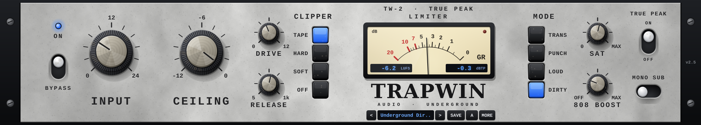
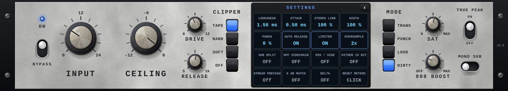

TrapWin Limiter makes your beats loud without losing the punch of the kick and the weight of the 808. It combines four stages in one plugin, in this order:
Built-in LUFS and true-peak metering, a streaming loudness preview and a "delta" listen mode help you decide how loud is loud enough.
Load TrapWin Limiter (vendor TrapWin) as the last plugin on your master or on a bus.
Requirements: Windows 10 or 11 (64-bit) or macOS 10.15 or newer (Intel or Apple Silicon, native); a 64-bit VST3 or AU host; OpenGL graphics. Sample rates from 44.1 kHz to 192 kHz are supported.
| CONTROL | RANGE | WHAT IT DOES |
|---|---|---|
| ON / BYPASS | on / off | The blue LED shows the plugin is active. The switch bypasses it. Bypass is delay-compensated and crossfaded, so you can compare without clicks or timing jumps. |
| INPUT | 0 to +24 dB | Gain into the processing. This is your main loudness control: more input means more clipping and limiting, and a louder result. |
| CEILING | −12 to 0 dB | Maximum output level. Both the clipper and the limiter work against this level. Default −0.3 dB; −1.0 dB is the safe choice for streaming. |
| DRIVE | 0 to +12 dB | Extra gain into the clipper and saturation only. Use it for more grit and harmonic density without changing how the limiter reacts to the input. |
| RELEASE | 5 ms to 1 s | How fast the limiter recovers after a peak. Short = louder and more aggressive, long = smoother. The selected MODE scales this time (see below). |
| BUTTON | CHARACTER | |
|---|---|---|
| TAPE | Rounded, warm saturation curve with a gentle knee. The most forgiving on full mixes and vocals. | |
| HARD | Straight cut at the ceiling. The punchiest sound for drums and 808s, but it gets harsh when pushed too far. | |
| SOFT | Smooth clipping that starts below the ceiling (default). A good middle ground. | |
| OFF | Clipper disabled. Only the limiter controls peaks, which is the most transparent option. |
The needle shows the total gain reduction of the clipper and limiter together (scale 0 to 20 dB). The left display shows integrated loudness in LUFS, the right display the highest true peak in dBTP; it turns red if the output ever exceeded the ceiling. Click inside the meter window to reset the measurements, for example before playing the song from the start.
| BUTTON | FUNCTION | |
|---|---|---|
| < > | Previous / next preset (factory presets first, then your own). | |
| Preset name | Opens the preset browser with Factory and My presets tabs. In My presets, click the delete mark twice to delete a preset. | |
| SAVE | Saves the current settings as your own preset. Type a name and press Enter. | |
| A / B | Switches between two complete settings for quick comparison. | |
| MORE | Opens the settings page with advanced controls (section 5). |
| CONTROL | RANGE | WHAT IT DOES |
|---|---|---|
| MODE · TRANS | Transparent: clean limiting with your release setting unchanged. | |
| MODE · PUNCH | Adds transient emphasis, a slightly slower attack and a faster release (×0.7). Kicks and snares hit harder. | |
| MODE · LOUD | Adds +2 dB drive into the clipper and halves the release time. Maximum loudness. | |
| MODE · DIRTY | Adds strong tape-style saturation and a faster release (×0.6). Gritty, underground character. | |
| SAT | 0 to 100 % | Saturation before the clipper: adds warmth and density while keeping peaks under control. |
| 808 BOOST | 0 to 100 % | Adds harmonics to everything below 120 Hz, so the 808 and sub bass stay audible on phones, laptops and earbuds without adding more sub energy. |
| TRUE PEAK | on / off | On (default): the limiter also catches inter-sample peaks, so the file does not clip after conversion to MP3/AAC. Off: sample-peak limiting, slightly louder but less safe. |
| MONO SUB | on / off | Makes everything below 120 Hz mono. Tighter low end and no phase problems on club systems and mono speakers. |

Click a box to switch it; drag up or down (or use the mouse wheel) on value boxes. Double-click a value to reset it. Close the page with X.
| SETTING | RANGE · DEFAULT | WHAT IT DOES |
|---|---|---|
| LOOKAHEAD | 0.1-5 ms · 1.5 | How far ahead the limiter looks to catch peaks. Longer = cleaner on fast transients. Overall plugin latency stays constant. |
| ATTACK | 0.05-5 ms · 0.5 | How smoothly gain reduction starts. Very short attack is tight but can distort low bass. |
| STEREO LINK | 0-100 % · 100 | 100 % = both channels get the same gain reduction (stable stereo image). Lower values limit each side more independently. |
| WIDTH | 0-200 % · 100 | Stereo width before processing. 0 % = mono, 200 % = extra wide. |
| PUNCH | 0-100 % · 0 | Transient shaper before the clipper. Brings out the attack of drums. The PUNCH mode adds to this value. |
| AUTO RELEASE | on / off · on | Adapts the release to the music: fast on short peaks, slower on sustained loud parts. Reduces pumping. |
| LIMITER | on / off · on | Turns the limiter stage off, leaving only gain, saturation and clipper. Use it to use the plugin as a pure clipper. With the limiter off, the output is no longer held under the ceiling. |
| OVERSAMPLE | 1x / 2x / 4x · 2x | Runs the clipper and saturation at a higher sample rate to reduce aliasing (harshness). 4x sounds cleanest and uses the most CPU. |
| SUB SPLIT | on / off · off | With the clipper on, the sub band (below 120 Hz) gets its own gentle clipping and is not hit by the main clipper. Keeps the 808 round while drums are clipped hard. |
| HPF SIDECHAIN | on / off · off | The limiter recovers faster when gain reduction is caused by sub bass. Less pumping on heavy 808s. |
| MID / SIDE | on / off · off | Limits the mid and side signals separately; the side recovers faster to keep the mix wide. |
| DITHER 16 BIT | on / off · off | Adds low-level dither. Turn on only when you export a 16-bit WAV directly from this plugin. |
| STREAM PREVIEW | Off / −14 / −16 / −9 LUFS | Turns the output down the way streaming services would (−14 LUFS Spotify/YouTube style, −16 Apple Music style, −9 loud reference). Use it to check if pushing harder still makes sense. Turn it off before exporting. |
| 0 dB MATCH | on / off · off | Compensates INPUT and DRIVE gain on the output, so you hear the processing at roughly the original level instead of just "louder". |
| DELTA | on / off · off | Plays only what the clipper and limiter remove. If you can clearly hear your kick or vocal in delta mode, you are pushing too hard. |
| RESET METERS | click | Resets the LUFS and true-peak readings. |
| PRESET | USE IT FOR | |
|---|---|---|
| Default | Neutral starting point: soft clipper, transparent mode, −0.3 dB ceiling. | |
| 808 Heavy | Beats built around a big 808: 808 BOOST, sub split, mono sub, HPF sidechain, punch mode. | |
| Trap Master Loud | Competitive loudness for trap masters: +9 dB input, punch, saturation, loud mode, 4x oversampling. | |
| Underground Dirty | Gritty, saturated sound: tape clipper, heavy saturation, dirty mode. | |
| Vocal Bus | Gentle peak control for vocal groups: no clipper, slower attack, −1 dB ceiling. | |
| Transparent Master | Clean mastering limiter for any genre: no clipper, long lookahead, −1 dB ceiling. |
Your own presets are saved as .tlpreset files in %APPDATA%\TrapVST\Limiter\Presets (Windows) or ~/.trapvst/limiter/presets (macOS). Copy this folder to move your presets to another computer.
The plugin state is saved inside your DAW project automatically. Your host's own preset system also works.
Streaming services turn loud songs down to about −14 LUFS. A master at −7 LUFS is not louder there; it only has less punch. Use STREAM PREVIEW to hear this. For trap, −9 to −6 LUFS integrated is common; let your ears decide.
Let the clipper take the first 1-3 dB of the sharpest peaks (fast drum transients) and the limiter the rest. This sounds louder and punchier than limiting alone.
Turn on MONO SUB and HPF SIDECHAIN, and try SUB SPLIT. Use 808 BOOST for presence on small speakers instead of more low-end EQ.
Short clicks in delta mode are fine. If you can hear the melody or vocal, back off INPUT or DRIVE.
| Formats | Windows 10/11 64-bit: VST3 · macOS 10.15+ (Intel + Apple Silicon): VST3, AU | |
| Channels | Stereo in / stereo out | |
| Sample rates | 44.1 kHz to 192 kHz | |
| Latency | Constant, reported to the host for automatic delay compensation: 294 samples (6.1 ms) at 48 kHz, 275 samples at 44.1 kHz. It does not change with oversampling or lookahead settings. | |
| Metering | Integrated loudness (ITU-R BS.1770 / EBU R128 style, LUFS), true peak (dBTP), gain reduction | |
| Oversampling | 1x, 2x, 4x for the clipper and saturation stages | |
| Plugin not found | Windows: check that the folder is C:\Program Files\Common Files\VST3\TrapLimit.vst3. macOS: plugins are in /Library/Audio/Plug-Ins/VST3 and /Library/Audio/Plug-Ins/Components. Then rescan plugins in your DAW. In FL Studio, enable "Rescan previously verified plugins". | |
| Plugin listed twice | An older copy is installed in another folder. Delete the old one and rescan. | |
| Window too big or small | Drag the window corner to resize. The size adapts to your Windows display scaling. | |
| Output quieter than expected | STREAM PREVIEW or 0 dB MATCH is on (settings page). Turn them off before exporting. | |
| No sound | Check DELTA is off and the plugin is not bypassed. | |
TrapWin Limiter © 2026 TrapWin. All rights reserved. Use of the software is subject to the EULA included in the download. Third-party components are listed in THIRD-PARTY-LICENSES.txt. VST is a registered trademark of Steinberg Media Technologies GmbH. All other product names are the property of their respective owners.